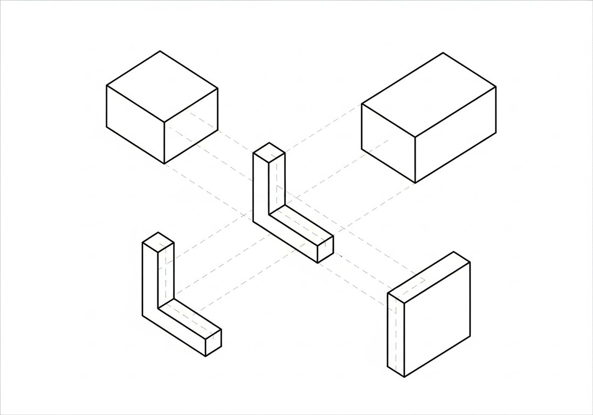
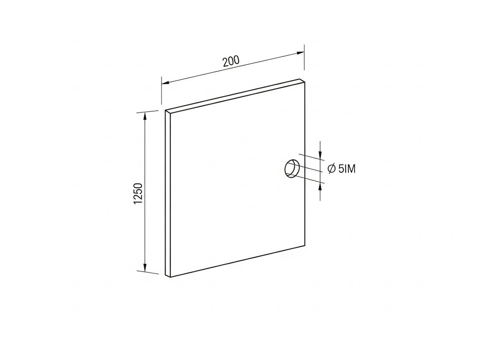
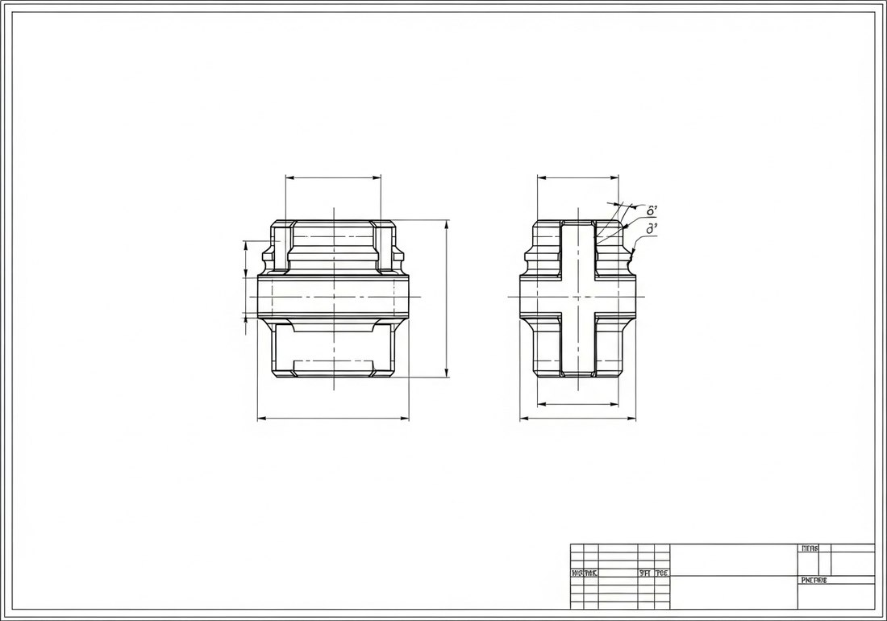

Көркем еңбек (ұлдар) · 1-бөлім · Графика және жобалау Art & Craft (Boys) · Section 1 · Graphics & Design Художественный труд (мальчики) · Раздел 1 · Графика и проектирование
Сызба — инженердің тілі: оны оқи білген адам кез келген бұйымды жасай алады. A drawing is the engineer's language — whoever can read it can make any part. Чертёж — язык инженера: кто умеет его читать, тот сможет изготовить любую деталь.
Чертёж (сызба) — бұйымның пішіні мен өлшемдерін шартты сызықтармен дәл бейнелейтін графикалық құжат. Суреттен айырмашылығы: ол көркем емес, дәл болуы керек. Сызбаны оқу деген — оны қарап, заттың нақты пішінін, өлшемін және қалай жасалатынын түсіну. Ол үшін үш нәрсені білу қажет: көріністер (заттың әртүрлі жақтан көрінісі), сызықтар (әрқайсысының өз мағынасы бар) және өлшемдер (миллиметрмен берілген сандар). A technical drawing is a graphic document that shows the shape and size of a part precisely, using conventional lines. Unlike a picture it must be accurate, not artistic. To read a drawing means to look at it and understand the real shape of the object, its size and how it is to be made. For that you need three things: views (the object seen from different sides), lines (each carries its own meaning) and dimensions (numbers given in millimetres). Чертёж — это графический документ, который точно изображает форму и размеры детали с помощью условных линий. В отличие от рисунка он должен быть точным, а не художественным. Читать чертёж — значит, глядя на него, понимать реальную форму предмета, его размеры и то, как его изготовить. Для этого нужно знать три вещи: виды (предмет с разных сторон), линии (каждая со своим значением) и размеры (числа в миллиметрах).
🔍 Үлкейту үшін суретті басыңыз. 🔍 Tap an image to enlarge it. 🔍 Нажмите на изображение, чтобы увеличить.

Бір сурет затты толық сипаттай алмайды. Сондықтан затты үш негізгі көрініспен бейнелейді — әрқайсысы белгілі бір жаққа қарап тұрғандай: One picture cannot fully describe a part. So an object is shown with three main views, as if you looked at it from a fixed side each time: Один рисунок не может полностью описать деталь. Поэтому предмет изображают тремя основными видами — будто смотришь на него каждый раз с одной стороны:
💡 Көріністер бір-бірімен проекциялық байланыста тұрады: ұзындық пен биіктік көрші көріністерде сәйкес келеді. 💡 The views stay in projection alignment: length and height match across neighbouring views. 💡 Виды связаны проекционной связью: длина и высота совпадают на соседних видах.
Сызбадағы әр сызық — белгілі бір «сөз». Оларды шатастыруға болмайды (МемСТ 2.303). Every line in a drawing is a kind of "word". They must not be confused (per GOST / ISO line standards). Каждая линия чертежа — это своего рода «слово». Их нельзя путать (ГОСТ 2.303).
Өлшемдер сызбаны нақты бұйымға айналдырады. Олар әрқашан миллиметрмен беріледі (өлшем бірлігі жазылмайды). Өлшем үш элементтен тұрады: Dimensions turn a drawing into a real part. They are always given in millimetres (the unit is not written). A dimension has three elements: Размеры превращают чертёж в реальную деталь. Они всегда даются в миллиметрах (единицу не пишут). Размер состоит из трёх элементов:
💡 Диаметр алдында ⌀ белгісі, радиус алдында R, шаршы алдында □ қойылады. 💡 A diameter is marked with ⌀, a radius with R, and a square with □ before the number. 💡 Перед диаметром ставят ⌀, перед радиусом — R, перед стороной квадрата — □.

| Линия | Вид | Назначение |
|---|---|---|
| Сплошная толстая основная | ────── | Видимый контур детали |
| Сплошная тонкая | ────── | Размерные, выносные линии, штриховка |
| Штриховая | – – – – | Невидимый контур (скрытые отверстия, рёбра) |
| Штрихпунктирная тонкая | —·—·— | Оси симметрии, центровые линии |
| Сплошная волнистая / с изломом | ∿∿∿ | Линия обрыва, граница вида и разреза |
| Сызық | Түрі | Қызметі |
|---|---|---|
| Тұтас қалың негізгі | ────── | Заттың көрінетін контуры |
| Тұтас жұқа | ────── | Өлшем, шығару сызықтары, штрих |
| Үзік (штрих) | – – – – | Көрінбейтін контур (жасырын тесік, қыр) |
| Жұқа штрихпунктир | —·—·— | Симметрия осі, центр сызығы |
| Толқынды / сынық тұтас | ∿∿∿ | Үзу сызығы, көрініс пен қима шекарасы |
| Line | Style | Purpose |
|---|---|---|
| Thick continuous (main) | ────── | Visible outline of the part |
| Thin continuous | ────── | Dimension, extension lines, hatching |
| Dashed | – – – – | Hidden outline (concealed holes, edges) |
| Thin dash-dot | —·—·— | Axes of symmetry, centre lines |
| Continuous wavy / zig-zag | ∿∿∿ | Break line, boundary of view and section |

Дайын жұмыс сызбасы: көріністер, өлшемдер, бұрыштама A finished working drawing: views, dimensions, title block Готовый рабочий чертёж: виды, размеры, основная надпись
Әрбір сызбаның оң төменгі бұрышында бұрыштама (штамп) болады. Онда бұйымның аты, материалы, масштабы, орындаушы және құжат нөмірі жазылады. Сызбаны оқуды осы штамптан бастаған дұрыс. Every drawing has a title block in the bottom-right corner. It states the part's name, material, scale, who drew it and the document number. It is wise to start reading a drawing from this block. У каждого чертежа в правом нижнем углу есть основная надпись (штамп). В ней указывают название детали, материал, масштаб, исполнителя и номер документа. Чтение чертежа разумно начинать именно со штампа.
МасштабScaleМасштаб
1:1 — нақты өлшем; 2:1 — үлкейтілген; 1:2 — кішірейтілген.1:1 full size; 2:1 enlarged; 1:2 reduced.1:1 — натуральная; 2:1 — увеличено; 1:2 — уменьшено.
МатериалMaterialМатериал
Болат, алюминий, ағаш — штампта көрсетіледі.Steel, aluminium, wood — stated in the block.Сталь, алюминий, дерево — указан в штампе.
Штампты оқуRead the blockЧитаем штамп
Аты, материалы, масштабы.Name, material, scale.Название, материал, масштаб.
Көріністерді анықтауFind the viewsНаходим виды
Қанша көрініс бар?How many views?Сколько видов?
Пішінді елестетуPicture the shapeПредставляем форму
Көріністерді бір затқа біріктіру.Combine views into one object.Соединяем виды в один предмет.
Өлшемдерді оқуRead dimensionsЧитаем размеры
Ұзындық, биіктік, диаметр.Length, height, diameter.Длина, высота, диаметр.
Жасауды жоспарлауPlan the makingПланируем изготовление
Қандай құрал керек?Which tools are needed?Какие нужны инструменты?